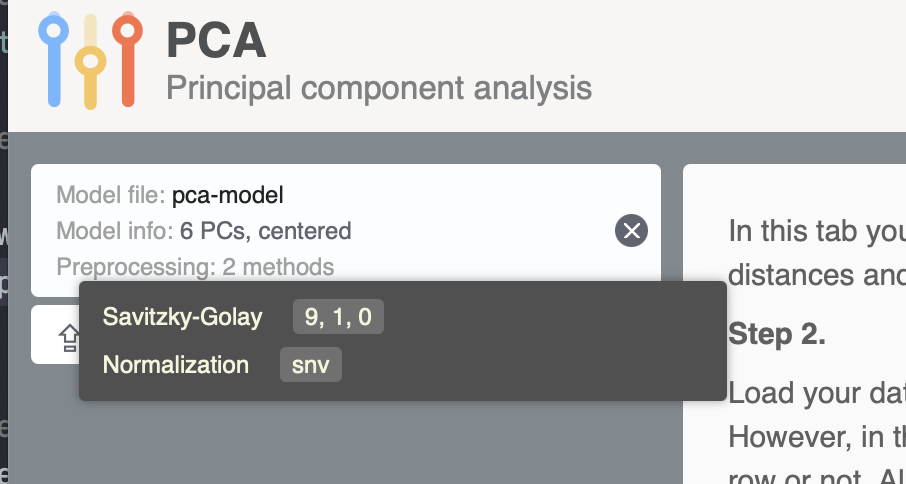
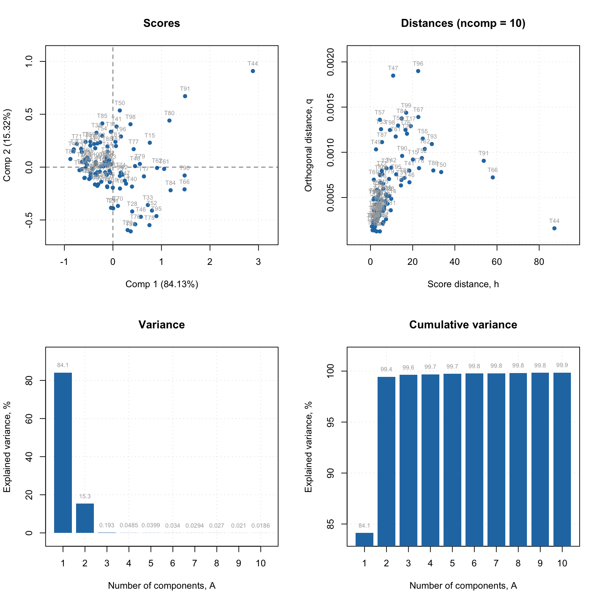
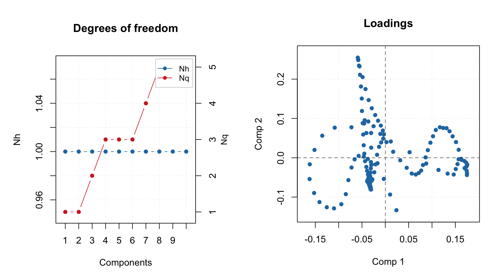

Interoperability with web-applications
Similar to preprocessing there is an interactive web-application, https://mda.tools/pca, which lets you create PCA models and apply them to a new dataset in any modern browser. Any PCA model created using pca() can be saved into a JSON file and then be loaded into the Project tab of the web-application. Including preprocessing methods!
Here is an example based on Simdata:
# define calibration set
Xc <- simdata$spectra.c
# create a sequence of preprocessing methods
p <- list(
prep("savgol", width = 9, porder = 1, dorder = 0),
prep("norm", type = "snv")
)
# create a PCA model with preprocessing as a part of the model
m <- pca(Xc, 6, prep = p)
# save the model to JSON file
writeJSON(m, "pca-model.json")If you run the code on your computer you will see a new pca-model.json file created in the working directory. Now open https://mda.tools/pca in your browser, select tab Project and load the file with the model. You will see something similar to the following:

After that you can upload dataset and see the result of projecting it to the PCA model directly in the app.
Likewise, any PCA model created in the application can be saved into a JSON file and loaded into R, so you can use it via predict(). For example this JSON file I created using the Train tab of the app and Simdata. It contains a PCA model on data with a preprocessing chain that includes SG smoothing, unit area normalization, and mean centering. Download it to your working directory and run the following code (here I assume you already have Xc matrix from the previous blocks of code):
# load PCA model from JSON file
m <- readJSON("pca-model-fromweb.json")
# apply it to Xc
r <- predict(m, Xc)
summary(r)##
## Summary for PCA results
##
## Selected components: 10
##
## Expvar Cumexpvar
## Comp 1 84.13 84.13
## Comp 2 15.32 99.45
## Comp 3 0.19 99.64
## Comp 4 0.05 99.69
## Comp 5 0.04 99.73
## Comp 6 0.03 99.76
## Comp 7 0.03 99.79
## Comp 8 0.03 99.82
## Comp 9 0.02 99.84
## Comp 10 0.02 99.86
There is also a limitation though, model loaded from JSON file created by the web-application does not contain calibration results, it can only be used for predictions/projections:
##
## Summary for PCA model (class pca)
## Type of limits: ddmoments
## Alpha: 0.05
## Gamma: 0.01
##
## Preprocessing methods:
## - savgol: width = 9, porder = 1, dorder = 0
## - norm: type = snv,## Calibration results not found (most probably this model is loaded from web-application).Most of the plots, which rely on calibration set results will not work with such model object and give you the same message as above. However plots, which are only based on model outcomes, such as loadings, eigenvalues and degrees of freedom are available:
